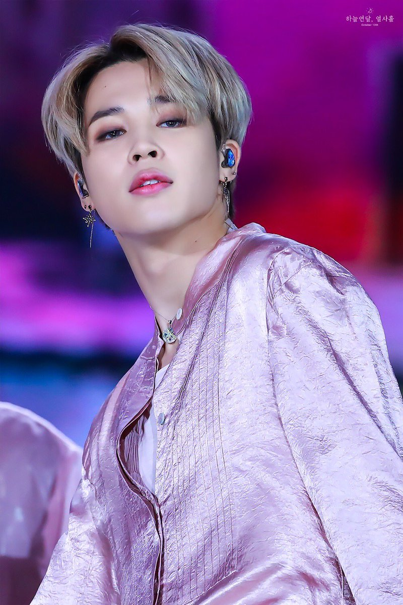
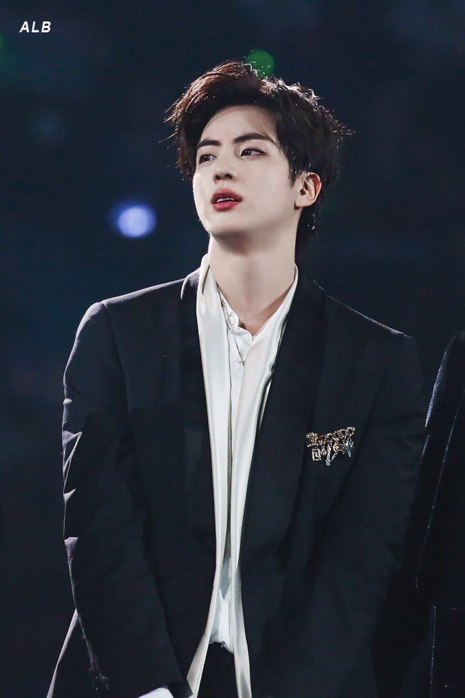

Kim Taehyung(김태형)
was born on December 30, 1995. He is famous by his stage name V.V first aspired to be a professional singer in elementary school, and eventually began taking saxophone lessons in early middle school as a means of pursuing the career. V initially became a trainee for Big Hit Entertainment after passing an audition in Daegu. On June 13, 2013, he made his debut as a member of BTS on Mnet's M Countdown with the track "No More Dream" from their debut single album, 2 Cool 4 Skool. He was first credited for music composition in The Most Beautiful Moment in Life, Part 1 when he co-wrote and co-produced the song "Hold Me Tight".

Jeon Jung-kook( 전정국)
was born on September 1, 1997. He is known mononymously as Jungkook. Jungkook initially had dreams of becoming a badminton player when he was young, but after seeing G-Dragon perform "Heartbreaker" on television, it influenced him to want to become a singer.In 2011, Jungkook auditioned for the South Korean talent show Superstar K during its auditions in Daegu.Though he was not selected, he received casting offers from seven entertainment companies. He eventually chose to become a trainee under Big Hit Entertainment after seeing RM, now his fellow band member and leader in BTS, perform. Being the youngest in the group he is treated as LITTLE BABY.

Park Ji-min(박지민)
was born on October 13, 1995. He is popular by the name Jimin. In 2013 he debuted as a member of the South Korean boy band BTS, under the record label Big Hit Entertainment.During middle school, he attended Just Dance Academy and learned popping and locking dance. Prior to becoming a trainee, Jimin studied contemporary dance at Busan High School of Arts and was a top student in the modern dance department. After a teacher suggested he audition with an entertainment company, it led him to Big Hit Entertainment. Once he passed the auditions in 2012, he transferred to Korean Arts High School, where he would meet fellow bandmate Kim Tae-hyung, graduating in 2014.

Min Yoon-gi(민윤기)
was born on March 9, 1993. His stage names are Suga and Agust D. Managed by Big Hit Entertainment, he debuted as a member of the South Korean pop idol group BTS in 2013. In 2016, he released his first solo mixtape, Agust D. He became interested in rap after hearing "Reggae Muffin" by Stony Skunk, stating that it was different from anything he had ever heard before. After hearing Epik High, he decided to become a rapper. By age 13, he began to write music lyrics and learned about MIDI. He worked a part-time job at a record studio by age 17. From then on, he began composing and arranging music, rapping, and performing.

Kim Nam-joon(김남준)
was born on September 12, 1994. Usually called as Rap Monster. He is the leader and a rapper in the South Korean boy group BTS. In 2015, he released his first solo mixtape, RM. As of October 2018, his second mixtape, Mono, is the highest charting album by a Korean soloist on the Billboard 200 chart, having peaked at 26. At the age of 11, RM became interested in hip-hop music after hearing Epik High's "Fly" in fifth grade.He found that the song had provided him comfort, and, due to this, decided to look further into the genre. Following an introduction to American rapper Eminem by his school teacher, RM grew interested in lyricism, printing lyrics he felt were "cool" and sharing them with his friends.

Jung Ho-seok (정호석)
was born on February 18, 1994. The stage name J-Hope was popular after his song hope. J-Hope made his debut as a member of the South Korean BTS, managed under Big Hit Entertainment. J-Hope released his first solo mixtape, Hope World, worldwide on March 1, 2018. Before debuting with BTS, he was part of the underground dance team Neuron and took dance classes at Gwangju Music Academy. J-Hope had been relatively well known for his skills in dance prior to his debut; he won various local prizes for dance, including placing first in a national dance competition in 2008. His skills in dance eventually led him to gain interest in singing, helping him to audition as an idol trainee. As a trainee, J-Hope was featured as a rapper in Jo Kwon's song "Animal", which was released in 2012.

Kim Seok-jin (김석진)
was born on December 4, 1992. He is known by his stage name Jin. Kim was scouted for the group while in university and joined Big Hit Entertainment as an actor, eventually transitioning to a Korean idol. Kim has co-written and released three solo tracks with BTS: "Awake" (2016), "Epiphany" (2018), and "Moon" (2020). While in junior high school, Kim was scouted by South Korean K-pop agency SM Entertainment off the street, but he rejected the offer at the time. He initially intended to be an actor, attending Konkuk University and graduating with a degree in art and acting on February 22, 2017. He enrolled in graduate school at Hanyang Cyber University, to pursue studies in areas other than music.